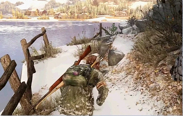

содержание
Озёрный курорт
Озёрный курорт
Глава
Глава

Сезон: Зима
Подглавы:
Охота,
Курортный домик
Локация:
Сильвер Лэйк
Мультиплеер
Артефакты:
11
Учебники:
1
Комиксы:
2
Медальоны «Цикад»:
2
Хронология
Предыдущая глава:
Университет
Следующая глава:
Автопарк
«Озёрный курорт» - девятая глава в Одни из Нас (англ. The Last of Us).
Наступила зима. Глава начинается с охоты Элли на местную живность. Ей удаётся подстрелить кролика однако, как подмечает сама Элли, этого мало, чтобы прокормиться. Привязав тушку к седлу лошади она замечает оленя, пасущегося неподалёку. Оставив лошадь, Элли выходит на новую охоту. Ей удаётся подстрелить животное из лука, но этого оказывается мало, и животное убегает прочь. Элли удаётся выследить уже мёртвого зверя по следам крови, которые приводят её к заброшенным деревянным сооружениям. Там она встречает двух незнакомцев, которые представляются как Дэвид и Джеймс. Элли выражает очевидное недоверие и наводит лук на двух мужчин. Дэвид предлагает обменять тушу оленя на что-то полезное для неё, и Элли незамедлительно отвечает: "антибиотики". Дэвид посылает своего напарника в город, и так как это может занять длительное время, он предлагает Элли найти место потеплее. Уже в помещении они проводят некоторые время в разговоре. Элли остаётся настороже, не расставаясь с ружьём, которое она потребовала у Дэвида. Вскоре они слышат крики заражённых и видят, что большая орда надвигается в их сторону. Некоторое время им удаётся удерживать позицию, но сильный наплыв вынуждает их искать убежище в другом помещении, напоминающий некий завод. Преодолев несколько препятствий на пути, они забредают в большое помещение, откуда уже нет выхода, вынуждая их отбиваться до последнего. Совместными усилиями им удаётся перебить всех заражённых и даже Топляка, и они возвращаются в свой лагерь. Отдыхая, они продолжают прерванный разговор. Дэвид делится, что для него нет ничего случайного. В доказательство к своим словам он рассказывает о психе, которого встретили его люди в Университете, и что самое забавное, он был в сопровождении с девочкой. Элли, поражённая таким поворотом событий, наставляет на оказавшегося противника ружье. К этому самому моменту возвращается и сам Джеймс, но Дэвид приказывает отдать лекарство и отпустить Элли. Ей удаётся добраться до лошади и ускакать прочь.
Элли успешно добирается до убежища, где в тяжёлом состоянии находится Джоэл. Она вкалывает Джоэлу антибиотик и, расположившись рядом, засыпает. На утро она просыпается от громких разговоров на улице. Как оказывается, это люди Дэвида, которые выследили Элли по следам копыт. Девочка планирует отогнать незваных гостей подальше от Джоэла и их убежища. Забравшись на Мозоль, она скачет прочь, привлекая всех преследователей на себя. Но во время погони Мозоль подстреливают, и теперь Элли вынуждена убегать на своих двоих. Не без боя ей удаётся проскочить мимо бандитов и добраться до местного отеля. Там её смог выследить и схватить в плен сам Дэвид.
Джоэл приходит в сознание и обнаруживает, что Элли нет рядом. Экипировав своё снаряжение, он выбирается наружу, где обнаруживает остатки группы Дэвида. Уничтожив некоторых из них, Джоэл захватывает двоих для допроса. Джоэл беспощадно мучает обоих с целью выяснить текущее расположение девочки, что ему, в конечном итоге, удаётся. Избавившись от бедолаг, Джоэл выдвигается на поиски Элли.
Успокоив Элли, Джоэл уводит её прочь из города.
Глава «Озёрный Курорт» содержит следующие материалы коллекционирования:
Сюжет
Охота
Наступила зима. Глава начинается с охоты Элли на местную живность. Ей удаётся подстрелить кролика однако, как подмечает сама Элли, этого мало, чтобы прокормиться. Привязав тушку к седлу лошади она замечает оленя, пасущегося неподалёку. Оставив лошадь, Элли выходит на новую охоту. Ей удаётся подстрелить животное из лука, но этого оказывается мало, и животное убегает прочь. Элли удаётся выследить уже мёртвого зверя по следам крови, которые приводят её к заброшенным деревянным сооружениям. Там она встречает двух незнакомцев, которые представляются как Дэвид и Джеймс. Элли выражает очевидное недоверие и наводит лук на двух мужчин. Дэвид предлагает обменять тушу оленя на что-то полезное для неё, и Элли незамедлительно отвечает: "антибиотики". Дэвид посылает своего напарника в город, и так как это может занять длительное время, он предлагает Элли найти место потеплее. Уже в помещении они проводят некоторые время в разговоре. Элли остаётся настороже, не расставаясь с ружьём, которое она потребовала у Дэвида. Вскоре они слышат крики заражённых и видят, что большая орда надвигается в их сторону. Некоторое время им удаётся удерживать позицию, но сильный наплыв вынуждает их искать убежище в другом помещении, напоминающий некий завод. Преодолев несколько препятствий на пути, они забредают в большое помещение, откуда уже нет выхода, вынуждая их отбиваться до последнего. Совместными усилиями им удаётся перебить всех заражённых и даже Топляка, и они возвращаются в свой лагерь. Отдыхая, они продолжают прерванный разговор. Дэвид делится, что для него нет ничего случайного. В доказательство к своим словам он рассказывает о психе, которого встретили его люди в Университете, и что самое забавное, он был в сопровождении с девочкой. Элли, поражённая таким поворотом событий, наставляет на оказавшегося противника ружье. К этому самому моменту возвращается и сам Джеймс, но Дэвид приказывает отдать лекарство и отпустить Элли. Ей удаётся добраться до лошади и ускакать прочь.
Элли успешно добирается до убежища, где в тяжёлом состоянии находится Джоэл. Она вкалывает Джоэлу антибиотик и, расположившись рядом, засыпает. На утро она просыпается от громких разговоров на улице. Как оказывается, это люди Дэвида, которые выследили Элли по следам копыт. Девочка планирует отогнать незваных гостей подальше от Джоэла и их убежища. Забравшись на Мозоль, она скачет прочь, привлекая всех преследователей на себя. Но во время погони Мозоль подстреливают, и теперь Элли вынуждена убегать на своих двоих. Не без боя ей удаётся проскочить мимо бандитов и добраться до местного отеля. Там её смог выследить и схватить в плен сам Дэвид.
Джоэл приходит в сознание и обнаруживает, что Элли нет рядом. Экипировав своё снаряжение, он выбирается наружу, где обнаруживает остатки группы Дэвида. Уничтожив некоторых из них, Джоэл захватывает двоих для допроса. Джоэл беспощадно мучает обоих с целью выяснить текущее расположение девочки, что ему, в конечном итоге, удаётся. Избавившись от бедолаг, Джоэл выдвигается на поиски Элли.
Курортный домик
Элли приходит в сознание и обнаруживает себя запертой в клетке, за пределами которой Джеймс разделывает человеческую тушу. Заходит Дэвид и говорит, что они не собираются её убивать - он только хочет, чтобы она присоединилась к ним. Осознав его истинные намерения, она отказывается сотрудничать, сломав при этом ему палец в попытке добраться до ключей. Позже, Дэвид и Джеймс затаскивают Элли на разделочный стол чтобы убить, но она говорит, что заражена (ранее укусив Дэвида), и предлагает взглянуть на следы укуса, тем самым подписывая Дэвиду смертельный приговор. Воспользовавшись их заминкой, она выхватывает тесак Дэвида и ударяет им в шею Джеймса, нанеся тем самым смертельную рану, и выпрыгивает через окно. Снежная буря позволяет Элли незаметно передвигаться по улицам городка, пока она не добирается до заброшенного ресторана, где её настигает Дэвид. Элли приходится подкрадываться к нему сзади, нанося все новые и новые удары своим ножом, чтобы добыть ключи от главного входа, к свободе. При нанесении очередного удара Дэвиду удаётся оглушить Элли, и она теряет сознание. Очнувшись, Элли пытается добраться до упавшего под стол мачете Дэвида. Всего в пару метрах от ножа Дэвид пинает её в живот и, повалив на спину, садится на неё, чтобы задушить. Элли удаётся дотянуться до мачете и ударить Дэвида по руке, что вынуждает его в криках сползти с неё. Уже сама забравшись на него, Элли делает удар за ударом по голове Дэвида пока её не останавливает Джоэл.Успокоив Элли, Джоэл уводит её прочь из города.
Коллекционные материалы
Глава «Озёрный Курорт» содержит следующие материалы коллекционирования:
- Артефакты - 11
- "Шутки в сторону"
- "Шутки в сторону": второй выпуск
- "Перебраться на ту сторону!"
- Медальон Райли
- Робот Сэма
- Кассетный проигрыватель
- Записка мамы
- Выкидной нож
- Фотография Сары и Джоэла
- Рюкзак Элли - сюжетный артефакт, пропустить невозможно.
- Журнал учёта мяса - рядом с рюкзаком Элли, на полке.
- Медальоны Цикад - 2
- Трэвис Кристоф (000283) - в комнате, откуда будет выходить Щелкун, на деревянном ящике на втором уровне, на который забирается Элли с помощью Дэвида на поиски лестницы.
- Пол Ди. Браун (000153) - в беседке у комплекса коттеджей на побережье, после того, как люди Дэвида подстрелят Мозоль.
- Справочники - 1
- Справочник по дымовым бомбам, том 2 - за мотелем около бензозаправки в запертой хибаре, когда Джоэл доберётся до общины Дэвида
- Комиксы - 2
- Дикие Звезды: Неопределённость - значительно ранив оленя, Элли попадёт в сарай. Комикс будет находится в комнате слева, в ящике письменного стола.
- Дикие Звезды: Негэнтропия - на скамейке смотровой площадки с видом на озеро. Как только Элли проходит сквозь первую трубу необходимо развернуться и подняться по ступенькам.
-
Все нижеприведенные артефакты уже автоматически находятся в рюкзаке
Элли
Необязательные разговоры
- Когда Элли с Дэвид доберутся до места, где пройдет финальная оборона от зараженных, на платформе с погибшими.
- После того, как Элли и Дэвид перебьют всех зараженных у пролома. Сюжетный диалог, невозможно пропустить.
Запертые двери
- Играя за Джоэла в этой главе, необходимо добраться до задней части мотеля, перед которым стоит заправочная станция, где будет находиться хибара.
Интересные факты
- Убегая от Дэвида, игрок войдёт в магазин. На одной из полок будет лежать приставка и два Dualshock джойстика.
- Это единственная глава в сезоне "Зима".
- Это единственная глава, где игрок имеет возможность играть как за Элли, так и за Джоэла одновременно.
- На уровне имеется модель ребёнка-каннибала. Она находится чуть впереди за решёткой в том месте, где происходит разговор женщины с Дэвидом. Также детей можно увидеть на одном из концепт-артов к главе.
- Есть предположение, что Дэвид был педофилом и пытался изнасиловать Элли, прежде чем убить. Актёр, Нолан Норт, озвучивший данного персонажа, подтвердил данную информацию в интервью с IGN.
- Будучи в ресторане, Дэвид утверждает, что запер парадную дверь, однако позже Джоэлу удаётся пробраться внутрь без видимого шума.
- В убежище Джоэла и Элли есть стереосистема. Такая же копия была у Сары в комнате в начале игры.
- В ресторане, когда Дэвид запрёт дверь и отберёт револьвер у Элли, он будет из него стрелять (и не раз), неважно, были в нем патроны или нет. А если Элли не подбирала револьвер, то Дэвид придёт со своим револьвером.
- Сцена допроса Джоэлом людей Дэвида является отсылкой к фильму «Заложница» (англ. Taken) с Лиам Нисоном. Отличие в том, что в игре было двое человек. В фильме герой говорил ещё живому Марку: «Я тебе верю», тогда как в игре Джоэл после убийства первого человека Дэвида, отвечая на возражение второму, за что тот убил того, ведь он ему всё сказал, что он ему верит. Джоэл так же использовал нож вместо прутьев под напряжением. В обоих случаях речь шла об информации о пропавшей девушке.
- Существует редкий баг,при котором,если в первой игре за Джоэла при открытии калитки рядом с домом убить определенного врага,то оставшиеся двое бандитов(один что прячется за настилом на крыльце дома рядом с калиткой,а второй что справа за грузовиком)не заспавнятся,а действие в игре заморозится.Если же мы пойдем по тому направлению,по которому Элли ехала на лошади,то вскоре пропадет текстура асфальта,а еще чуть позже коллизия тоже исчезнет и мы провалимся за карту.Пройдя чуть дальше,асфальт с коллизией появится и мы застрянем в нëм без возможности посмотреть где мы и вылезти наружу.Лечится перезагрузкой эпизода(Данный баг был обнаружен на Playstation 3 версии)